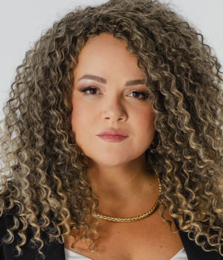
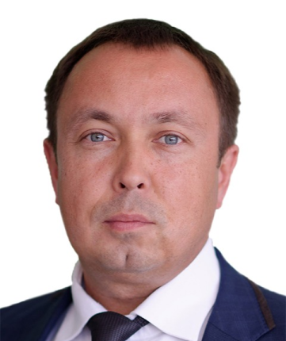
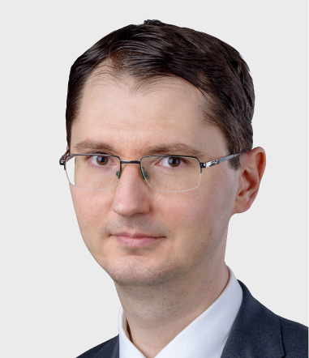

Органы управления АБИСС
Высшим органом управления Ассоциации АБИСС является Общее собрание ее членов. Обязательное общее отчетное собрание проводится один раз в год. Также при необходимости, по решению Председателя ассоциации, созываются Внеочередные общие собрания. Правление выступает действующим коллегиальным органом управления АБИСС. Единоличным исполнительным органом управления ассоциации и ее действующим операционным руководителем является Председатель. Правление и председатель АБИСС выбираются Общим собранием один раз в три года.
 Председатель АБИСС
Председатель АБИСС
Харыбина Анастасия
директор по развитию бизнеса AKTIV.CONSULTING (входит в Компанию «Актив»).
текст текст текст текст текст текст текст текст текст текст текст текст текст текст текст текст текст текст текст текст текст текст текст текст текст текст текст текст текст текст текст текст текст текст текст текст текст текст текст текст текст текст текст текст текст текст текст текст текст текст текст текст
Правление АБИСС
Безгодов Евгений
исполнительный директор и сооснователь компании Deiteriy.
Специализируется на исследовании вопросов менеджмента информационной безопасности и управления соответствием требованиям национальных и международных стандартов. Является автором публикаций в периодических профессиональных изданиях. Имеет практический опыт обеспечения информационной безопасности коммерческих организаций. Обладает профессиональными статусами CISA, CISM, PCI QSA, PCI QPA, аудитор СТО БР ИББС и 382-П.

Малинин Юрий
председатель Ассоциации РОСЭУ, председатель комитета по образованию в области информационной безопасности Ассоциации Защиты Информации, член совета директоров ассоциации «РусКрипто»
С 2001 года занимает пост директора Академии Информационных Систем. Инициатор и организатор ряда новых учебных программ, тренингов, семинаров, всероссийских и международных конференций по тематике «Информационная безопасность», «Информационные технологии», «Электронный документооборот» и другие.
Прищеп Станислав
руководитель направления систем управления информационной безопасности компании STEP LOGIC
Более 15 лет работает в сфере информационной и сетевой безопасности. В разное время занимал должности аналитика, консультанта, архитектора и инженера по ИБ в различных банках и системных интеграторах. В компании STEP LOGIC руководит направлением систем мониторинга и управления информационной безопасностью.

Сердюк Виктор
генеральный директор АО «ДиалогНаука»
В 2005 году защитил диссертацию по информационной безопасности на соискание ученой степени кандидата технических наук в МИЭМ. Автор более 100 публикаций в области информационной безопасности, в том числе 2 монографии. Имеет ряд профессиональных сертификатов по продуктам и технологиям защиты информации. Удостоен грамоты Центра информационной безопасности ФСБ РФ за активное содействие в деле обеспечения информационной безопасности РФ.
Слободенюк Дмитрий
коммерческий директор компании ARinteg
В сфере ИТ работает с 1988 года работает. С 1996 года осуществляет управленческие функции в компаниях ИБ-направленности. Активно участвует в качестве эксперта и спикера во многих российских и зарубежных отраслевых мероприятиях по тематике информационной безопасности.